yaPDP — User Manual
Welcome to the machine. This guide walks you through every page of the emulator — from the very first boot to the deepest configuration options — so you can spend your time in the machine room, not in the documentation.
Everything below applies to both the browser version and the Tauri desktop app.
Table of Contents
- Quick Start
- The Front Panel (Panel page)
- The Operator Console
- User Terminals (TTY 1 / TTY 2)
- The LP11 Line Printer (Printer page)
- The VT11 Vector Display (Display page)
- Storage (paper tape, disk & tape images)
- Machine State (STATE button)
- Configuration (Config page)
- Guest Operating Systems
- Buttons, Shortcuts & Indicators
- Troubleshooting
- The Desktop App
Quick Start
On your very first launch the emulator greets you with a short onboarding hint that explains what to do right away — which page to open, the mounted guest OSes and their boot commands. A Quick boot button next to Got it opens the wizard directly, so a first-time user can see a guest OS running in one click:
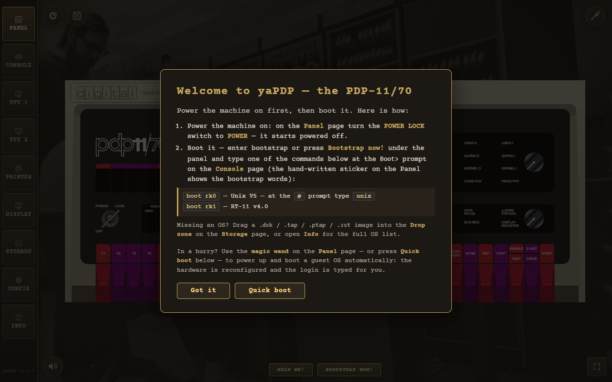
The first-run onboarding hint.
The magic wand
In a hurry? Use the magic wand button in the top-right corner of the window. It stays on every page except Info. One click does everything:
- Opens a picker listing every guest operating system (and the paper tapes).
- Chooses one, switches to the operator console, and reboots the machine.
- Types the
bootcommand — and the login too, where the credentials are known (e.g. Unix V5:boot rk0→unix→ loginroot).
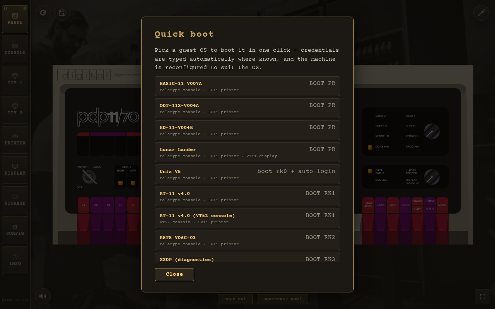
The quick-boot picker lists every guest OS and paper tape.
The wizard is prompt-aware: it watches the console output and types the login only when the guest
actually prints login:, so slow boots with lots of output (e.g. 2.11 BSD) still reach the
prompt reliably. Each guest also declares the machine profile it wants — e.g. RT‑11/RSX/RSTS enable the
LP11 line printer, and Unix V5/BSD force a teletype console — so the wizard
reconfigures the machine if
needed and resumes the boot automatically. Every wizard boot starts on a fresh page (clean paper and
clear screens), and a toast warns
"Autoloading in progress — don't touch the teletype/keyboard" while the sequence is being
typed.
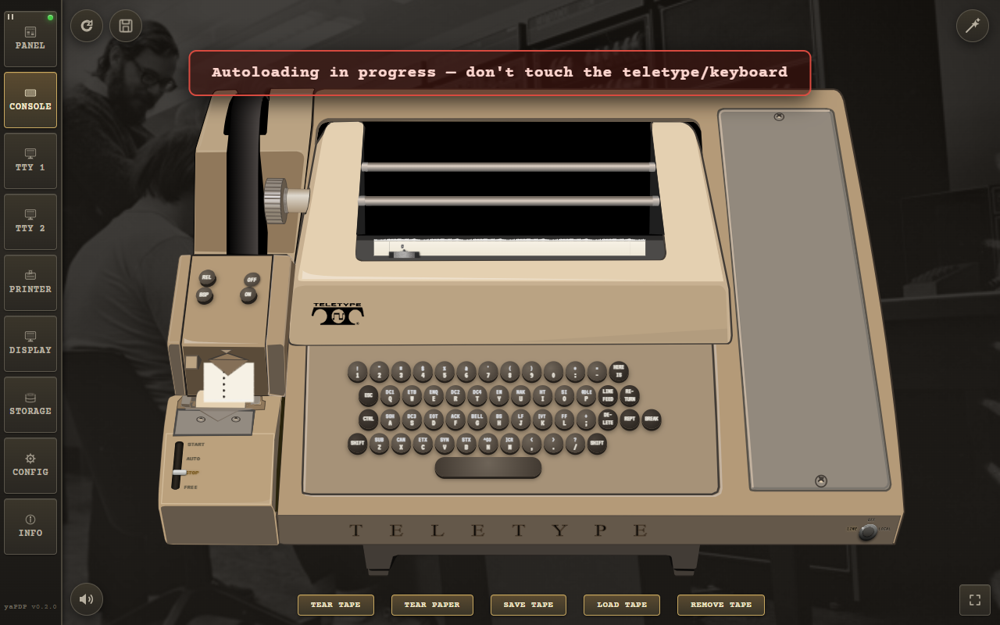
While the wizard types the boot sequence, a toast asks you not to touch the teletype/keyboard.
The classic way
- At the
Boot>prompt, typeboot rp1and press ENTER. - BSD 2.11 will autoboot into multiuser mode. Login as
root(no password). - Try
ls,ps -aux,df— or compile a C program withcc.
The Front Panel (Panel page)
Every switch, LED, and rotary knob of a real PDP‑11/70 is faithfully recreated. The Panel page is where you toggle in a bootstrap loader the way DEC engineers did in the 1970s.

The PDP‑11/70 front panel, powered on.
Front panel switch sequences
A simple light chaser — toggle this in to see the address and data LEDs dance:
Switch sequence: HALT, 001000, LOAD ADDRESS
012700, DEPOSIT
000001, DEPOSIT
006100, DEPOSIT
000005, DEPOSIT
000775, DEPOSIT
001000, LOAD ADDRESS, ENABLE, START
Restart the bootloader:
HALT, 120000, LOAD ADDRESS, ENABLE, START
The Bootstrap now! button refuses to start the machine while it is powered off:
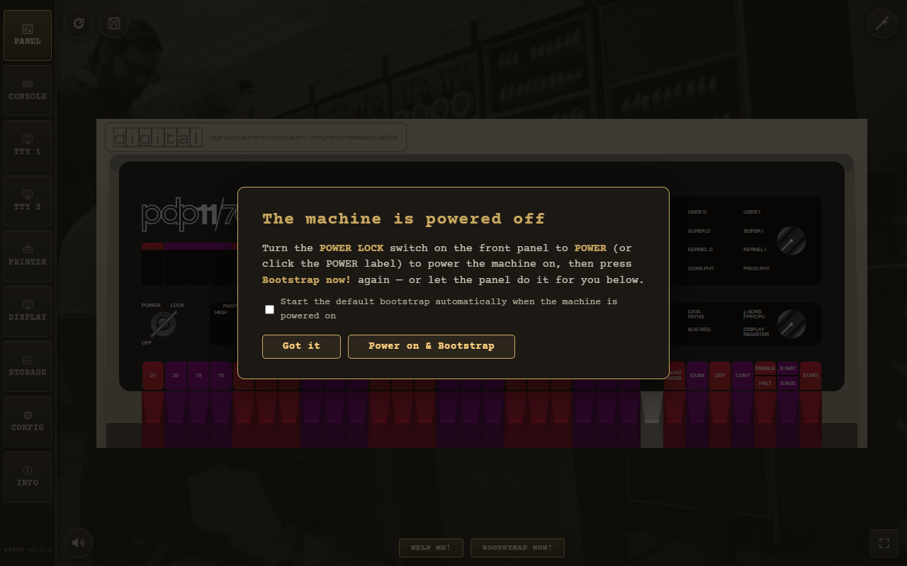
Bootstrap now! requires the machine to be powered on first.
The dialog also offers a shortcut to the CONFIG Auto-boot option: tick the checkbox to start the default bootstrap automatically on every future power-on, without visiting the Config page. The choice persists and stays in sync with the CONFIG page checkbox.
The Operator Console
The operator console is what the PDP‑11 uses as its TT0: — the machine's own typewriter.
Depending on the CONFIG page, it is either a Model 33 ASR teletype or a
DECscope VT52.
Model 33 ASR teletype
The console is rendered as an authentic light-cream/beige Model 33 ASR: a paper roll behind the rising sheet, a glass carriage window, and a stamped Teletype Corporation logo on the lower face plate.

The Model 33 ASR operator console at the Boot> prompt.
- Keyboard. Round dark keycaps with light two-line legends — the base glyph centred, the CTRL-code name or shift symbol above — plus the historical special keys: ESC, LINE FEED, RETURN, DELETE, HERE IS (answerback), REPT (auto-repeat) and BREAK (asserts the console DL11 break condition).
- Upper Case Only. The on-screen keycaps always send upper-case letters. The physical keyboard
folds
a–ztoA–Zonly when the Upper Case Only CONFIG option is enabled (off by default, so 2.11 BSD receives lower case). - Paper printing. Authentic nroff/man overstrike (
^H) rendering: re-printing the same glyph gives bold, underscores give underline, and striking a different glyph leaves the real dark overstrike blot a hard-copy terminal makes. - Margins. Long lines faithfully jam the carriage at the right margin (72 or 80 columns); characters overstrike the last column instead of wrapping. The paper width follows the selected width so a full line reaches the paper edge. The paper is anchored to the carriage and grows upward out of the top of the machine body; once its edge reaches the top of the window, a scrollbar appears and the view follows the freshly printed line.
- ASR reader/punch. Beside the machine sits the ASR tape reader/punch unit. Every byte echoed to the console punches a matching row of holes on an 8-track paper tape (tracks 1–7 = ASCII, track 8 = parity). As on a real ASR‑33 the punch is OFF by default — enable it from the CONFIG page or its own control.
- Paper-tape reader. The Load tape button below the machine opens a file dialog and
inserts a paper tape into the reader — a raw
.ptap(as saved by the punch or the Storage page), a compressed.ptap.zst, or a plain.txtwhose characters become 7-bit tape codes. The full tape hangs from the reader slot down to the bottom of the window, its ragged free end torn like the punched tape's. The four-position switch on the TAPE READER cabinet governs reading: START runs the reader continuously, sending the tape to the machine at the console speed (authentic ~10 chars/sec or the fast CONFIG pace); AUTO sends one byte and then feeds the next only when the machine's DL11 has accepted the previous one (paused byDC3 / X-OFF, resumed byDC1 / X-ON); STOP pauses; FREE releases the tape and shows the Remove tape from reader button (hidden in every other mode) to pull it out. Clicking a position label jumps straight to it; clicking the round switch disc itself turns it one detent clockwise (START → STOP → FREE → AUTO), like rotating the real switch. The CCU knob on the apron (LINE / OFF / LOCAL) works the same way: click a label to jump, or click the knob itself to turn it one detent clockwise (LINE → OFF → LOCAL). The CCU routes every read byte exactly like the keyboard: in LOCAL the tape prints on the paper only (a tape-to-paper copy, nothing reaches the machine); in LINE it is sent to the machine and printed by the machine's echo — printing locally too would double every character on echoing guests. With the punch engaged (ON), every read byte is also punched onto the output tape — the classic ASR trick for duplicating tapes (reader in, fresh tape out). As the tape is read it visibly moves up through the slot and shortens; when the last byte is read the tape has gone into the machine and a new one can be loaded.
VT52 as the console
When the console terminal is set to a VT52, the operator console becomes a DECscope with its authentic white/grey (P4) phosphor on a black tube — see User Terminals below for the full behaviour, which is shared.

A DECscope VT52 as the operator console, showing the Boot> prompt.
User Terminals (TTY 1 / TTY 2)
Up to two user VT52 terminals (shown only when configured on the CONFIG page) let guest OSes that prefer video terminals run side by side. Each is drawn as an authentic slanted DECscope monoblock: an off-white moulded-plastic cabinet with a vent grille, a recessed screen in a deep bezel, and a plain plastic side panel with a raised ridge. Input comes from the physical keyboard, as on the original DECscope.

A user VT52 terminal (TTY 1) running an interactive session.
- Font. Text is rendered in the authentic
fritzm/vt52bitmap display font (monospaceis the fallback until the webfont loads). - Clear screen. Clear screen (ESC E) and form feed (
^L) both wipe the display and home the cursor, soclearand multi-page nroff/man output start each page from the top row. - CRT simulation (optional). A pure-CSS effect adds brightness flicker, scanline shimmer and a vertical-hold roll band.
- Text mode (optional). Renders the terminal as a plain text field instead of the canvas,
enabling native text selection and Windows Clipboard (
Ctrl+C/Ctrl+V/ right-click paste) for fast source-code entry — at the cost of the SGR emphasis rendering.
The LP11 Line Printer (Printer page)
The LP11 is an animated line printer on wide 132-column paper (72/80/100/132 selectable). It has no
keyboard — it only prints. Use the Print button to send the accumulated jobs to the real OS
printer via the system dialog, or Save .txt to export the output (page breaks are kept as
\f markers).

The LP11 line printer printing a job listing.
- Speed. Like the real LP11, it echoes characters far faster than the Model 33 ASR console teletype (which keeps its authentic ~33 cps pacing), printing at close to the original's ~300 lines/min.
- DONE handshake. The LP11 honours the historical DONE handshake: writing LPDB clears DONE and re-asserts it as each character is consumed by the mechanism, so a guest print job is throttled at printer speed.
- OFF LINE. When the printer is OFF LINE (or powered off), the controller latches a sticky
ERROR flag in LPCS while keeping DONE set — so a guest OS driver reports an error (e.g.
?LP0: I/O error) instead of silently discarding the job. - Form feed. The LP11 honours form feed (FF, 0x0C) — the 2.11BSD spooler (
lpr/lpd) sends FF between jobs so each starts on a fresh page: it fills the rest of the sheet (66 lines at 6 LPI) and closes it with a dashed fold/perforation marker. - Tabs & paper. The carriage advances to the next 8-column tab stop on TAB, and the paper is sized to the configured print width (centred in the machine body). The cabinet auto-scales down proportionally to fit the window when it gets too small, and the rising fanfold paper climbs the same fraction of the window after scaling.
The VT11 Vector Display (Display page)
An optional DEC VT11 vector-graphics display processor on its own green-phosphor CRT page (1024×768 logical resolution, auto-scaled to fit the window), enabled from the CONFIG page. Lunar Lander uses it — the quick-boot wizard enables the display and switches to the Display page automatically.

Lunar Lander drawn on the VT11 vector-graphics CRT.
Storage (paper tape, disk & tape images)
The Storage page manages every kind of storage media. It has two tabs — Images and Paper Tapes — because the two workflows are completely different.

The Storage page, Images tab: the drop zone, mounted images, disk export and persistent disk changes.
Images tab:
- Drag & drop drop zone. Drop any disk/tape image here —
.dsk,.tap,.ptapand their.zst-compressed forms are supported. While the Storage page is active you can also drop a file anywhere over the window — a full-window drop target appears. - Mounted images / Unmount list. Shows currently mounted images and lets you unmount them. Mounted images persist in browser storage (IndexedDB) and are re-mounted automatically on the next launch — changes to disk contents survive across sessions.
- Export disk. Downloads a mounted disk image to your machine.
- Persistent disk changes. Guest-OS writes are saved to browser storage and overlaid on the base image on the next launch; reset discards the saved changes, returning the image to its pristine state.
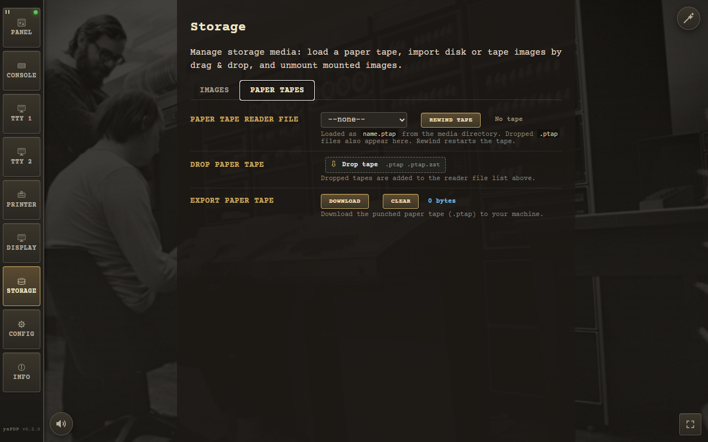
The Storage page, Paper Tapes tab: the reader file selector, a .ptap
drop zone and the punch-tape export.
Paper Tapes tab:
- Paper tape reader. A file selector for the
#ptrdevice. Load BASIC‑11, ODT‑11, ED‑11, or Lunar Lander from simulated paper tape — then boot withBOOT PR. Dropped.ptapfiles appear here too. - Drop paper tape. A small drop zone accepting
.ptapand.ptap.zst— dropped tapes are added to the reader file selector. - Export paper tape. Downloads the punched paper tape (
.ptap) from the punch buffer, or clears the buffer.
Note: the paper-tape reader is driven by the console bytes — every byte echoed to the console punches a matching row of holes on the ASR paper tape.
Machine State (STATE button)
The round STATE button (top-left corner, right of REBOOT) opens the machine-state dialog — a full save/restore of the emulated PDP‑11, not just the CPU: registers, memory, every I/O device (console, terminals, printer, disks, tape and the paper-tape reader/punch), the paper in the teletype and LP11, the VT52 screen contents and even the VT11 vector-display picture are all captured. Think of it as a save file of the whole machine.
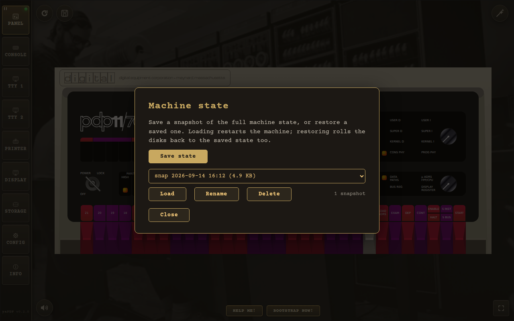
The machine-state dialog with one freshly saved state.
- Save state — captures the machine exactly as it is right now under an auto-generated name (date and time). The hardware configuration is part of the state: restoring it re-applies the console type, user terminals, printer and VT11 display, restarting the machine to match.
- Load — restores the selected state and restarts the machine; a confirmation asks first. States saved by older versions of the emulator keep working.
- Rename / Delete — organise the list or remove states; the counter next to the list shows how many states you have.
The STATE button mirrors REBOOT and is available on the Panel, Console (teletype or VT52) and TTY pages. States are stored in the browser's IndexedDB and survive reloads and sessions.
Configuration (Config page)
The Config page controls the emulated peripherals and is persisted between sessions. The form is split into four tabs, with the Apply and Restore defaults actions in a bar below the tabs:
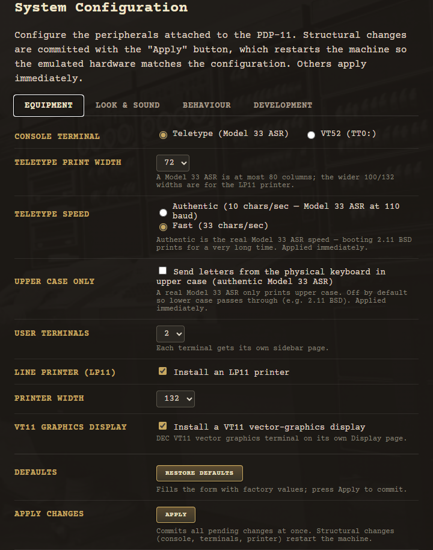
Equipment
- Console terminal — the operator console (tty0): a Model 33 ASR teletype or a DECscope VT52.
- User terminals — 0–2 extra VT52 terminals (TTY 1 / TTY 2), each with its own sidebar page.
- Line printer (LP11) — install the animated LP11 line printer on its own Printer page.
- VT11 graphics display — install the DEC VT11 vector-graphics terminal on its own Display page.
- Teletype print width — 72 or 80 columns for the Model 33 ASR console (a teletype is at most an 80-column machine).
- Printer width — 72/80/100/132 columns for the LP11 printer page.
- Teletype speed — authentic (real 110-baud Model 33 ASR, ~10 chars/sec) or fast development pace.
- Upper Case Only — send letters from the physical keyboard in upper case (authentic Model 33 ASR); off by default so lower-case (e.g. 2.11 BSD file names) passes through.
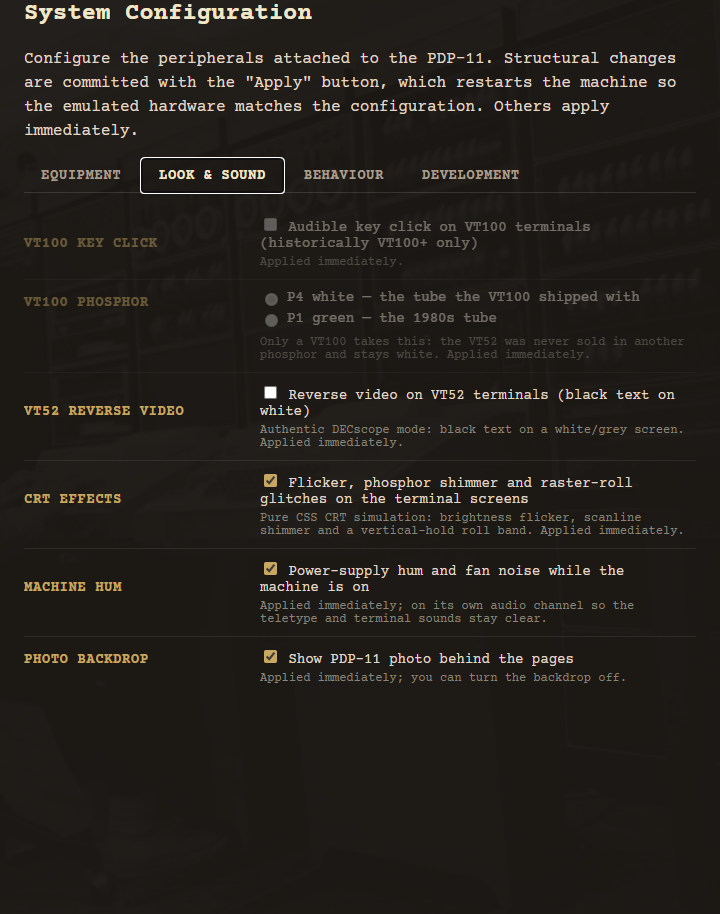
Look & sound
- VT52 key click — audible key-click feedback on VT52 terminals (historically VT100+ only).
- VT52 reverse video — the historical DECscope reverse-video mode: black text on white.
- CRT effects — pure-CSS CRT simulation: brightness flicker, phosphor shimmer and a vertical-hold roll band.
- Machine hum — ambient power-supply hum and fan noise while the machine is on.
- Photo backdrop — show the PDP-11 machine-room photo behind the pages.
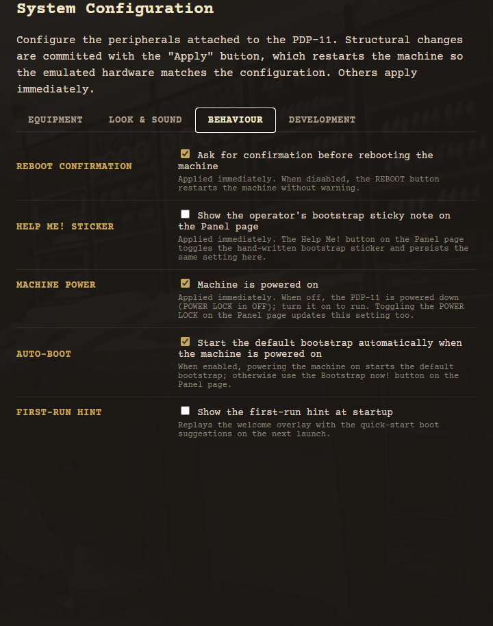
Behaviour
- Reboot confirmation — ask before rebooting the machine; the "Don't show this warning anymore" option can be restored here at any time.
- Help Me! sticker — show the operator's hand-written bootstrap sticky note on the Panel page.
- Machine power — the machine is powered on; switching it off powers down the PDP-11 (POWER LOCK in the off position).
- Auto-boot — start the default bootstrap automatically when the machine is powered on or rebooted. The reboot confirmation dialog offers a shortcut to this option (its "Start the default bootstrap automatically after reboot" checkbox).
- First-run hint — replay the first-run welcome overlay with quick-start boot suggestions on the next launch.
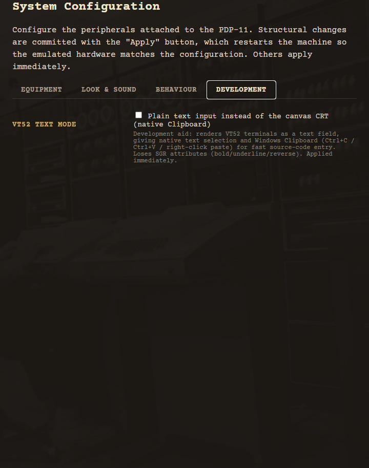
Development
- VT52 text mode — render VT52 terminals as a plain text field instead of the canvas CRT, giving native text selection and Windows Clipboard (Ctrl+C / Ctrl+V / right-click paste) for fast source-code entry; loses SGR attributes (bold/underline/reverse).
Leaving the Config page with uncommitted changes asks for confirmation, so nothing is lost silently:
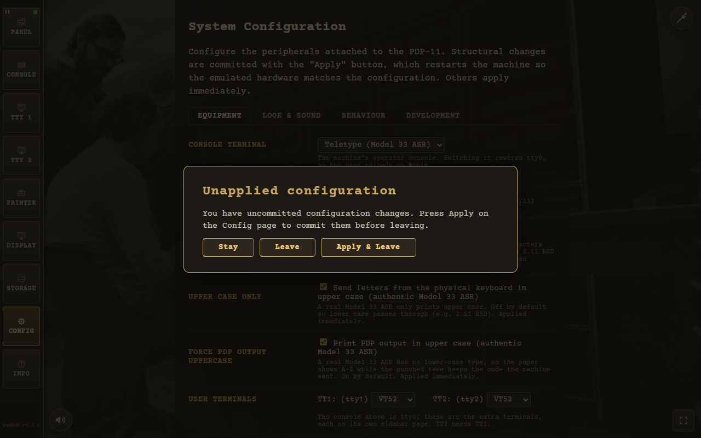
The emulator warns before leaving Config with uncommitted changes.
Structural changes (console type, terminals, printer, VT11 display) are committed with Apply, which restarts the machine so the emulated hardware matches the configuration. Print widths, teletype speed, the Upper Case Only flag, key click, reverse video, CRT effects, VT52 text mode, machine hum and the photo backdrop apply immediately. Restore defaults fills the form with factory values (committed by Apply); the four live BEHAVIOUR options — Reboot confirmation, Help Me! sticker, Machine power and Auto-boot — are reset to their factory values immediately, without waiting for Apply (the machine powers down, since the factory state is off).
The hum is synthesized with Web Audio on its own audio channel, so it never cuts off the teletype/printer or the VT52 key-click sounds.
Guest Operating Systems
The emulator ships with ready-to-boot disk and tape images. Just type boot
at the Boot> prompt — or pick one with the magic wand.
| Disk | Operating System | How to Boot |
|---|---|---|
| RK0 | Unix V5 | boot rk0 → unix → login as root |
| RK1 | RT‑11 v4.0 | BOOT RK1 |
| RK2 | RSTS V06C‑03 | BOOT RK2 — login 11,70 password PDP |
| RK3 | XXDP (diagnostics) | BOOT RK3 |
| RK4 | RT‑11 3B Distribution | BOOT RK4 |
| TM0 | RSTS 4B‑17 (tape) | BOOT TM0 — follow ROLLIN restore procedure |
| RL0 | BSD 2.9 | boot rl0 → rl(0,0)rlunix → CTRL/D → login root
|
| RL1 | RSX‑11M v3.2 | BOOT RL1 — login 1,2 password SYSTEM |
| RL2 | RSTS/E v7.0 | BOOT RL2 — login 11,70 password PDP |
| RL3 | XXDP (extended) | BOOT RL3 |
| RP0 | ULTRIX‑11 V3.1 | boot rp0 → CTRL/D → login root |
| RP1 | BSD 2.11 | boot rp1 — autoboots to multiuser, login root |
| RP2 | RSTS/E v9.6 | BOOT RP2 — answer prompts, login 11,70 |
| RP3 | RSX‑11M v4.6 | BOOT RP3 — auto-logs 1,2 SYSTEM |
| RP4 | RSTS/E v10.1 | BOOT RP4 — answer prompts, login 11,70 |
Buttons, Shortcuts & Indicators
Switching pages
Use the sidebar to switch between:
- Panel — the front panel with switches and LEDs.
- Console — the operator console: a Model 33 ASR teletype (or a DECscope VT52, when the console terminal is a VT52).
- TTY 1 / TTY 2 — user VT52 terminals, shown only when configured.
- Printer — the LP11 line printer page, shown only when configured.
- Display — the VT11 vector-graphics CRT page, shown only when configured.
- Storage — storage media in two tabs: Images (drop zone, mounted images) and Paper Tapes (reader, punch export).
- Config — configure the emulated peripherals (persisted between sessions).
- Info — detailed instructions, OS reference and the About block (version, website, author and license; the version marker at the bottom of the sidebar opens this page).
Floating controls
| Control | Where | What it does |
|---|---|---|
 Magic wand
Magic wand
|
Top-right corner (every page except Info) | Quick-boot picker — chooses a guest OS, reconfigures, reboots and types the boot/login. See Quick Start. |
 REBOOT
REBOOT
|
Top-left corner, just right of the sidebar (Panel, Console and TTY pages) | Round button with a restart icon. Restarts the machine; when Auto-boot is enabled it also boots the built-in default loader. By default a confirmation dialog asks first, with a "Don't show this warning anymore" option. The dialog also carries an Auto-boot shortcut: tick Start the default bootstrap automatically after reboot to run the default loader after this reboot — it is the CONFIG Auto-boot option itself, persists, and stays in sync with the CONFIG page checkbox. Without Auto-boot the machine halts after the reboot. The confirmation dialog is shown below. |
| STATE | Top-left corner, right of REBOOT (Panel, Console and TTY pages) | Machine-state dialog — saves and restores the whole emulated machine (CPU, memory, devices, paper, terminal screens). See Machine State. |
 Mute
Mute
|
Bottom-left corner, just right of the sidebar | Round button that toggles all sounds at once — hum, teletype/LP11, paper feed/tear, key clicks and the bell. State is persisted with the rest of the configuration. |
 Fullscreen
Fullscreen
|
Bottom-right corner of the window | Floating button that hides the browser/system chrome (address bar, OS window frame, taskbar) while leaving the emulator UI untouched. Press again or Esc to return. |
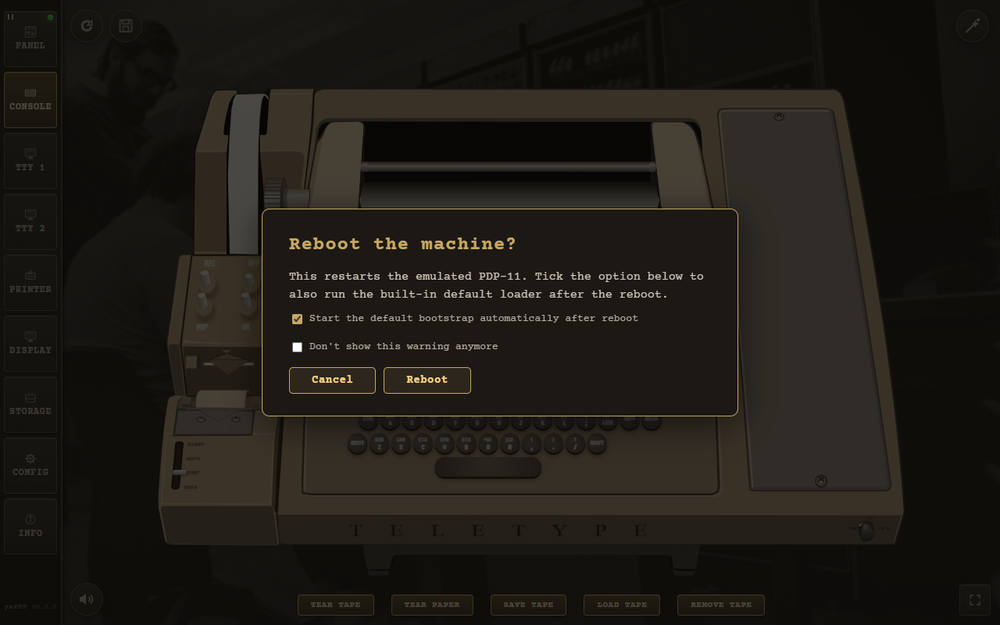
The REBOOT button asks for confirmation by default: the dialog carries the Auto-boot shortcut (Start the default bootstrap automatically after reboot) and the "Don't show this warning anymore" option.
Sidebar activity lamps
Each output sidebar button has a small blinking green LED in its top-right corner: it pulses while the PDP‑11 writes output to that console/terminal (and blinks for the whole print job on the Printer button), then switches off about half a second after the output stops.
Troubleshooting
An image cannot be loaded
If a guest OS image cannot be fetched completely — a big BSD image dropped by the hosting server mid-download, or an image that is not bundled in the Minimal desktop build — the emulator doesn't stall silently. A dialog in the same shared modal style as the first-run hint explains that the image is incomplete and offers Open Storage, which jumps straight to the drop zone for a manual drag & drop of the downloaded file.
The wording adapts to the environment: a page opened as a local file:// explains that the
browser blocks fetching the media directory (and suggests a local web server), while the Tauri Minimal
build explains that the image is not shipped and points to the drop zone.
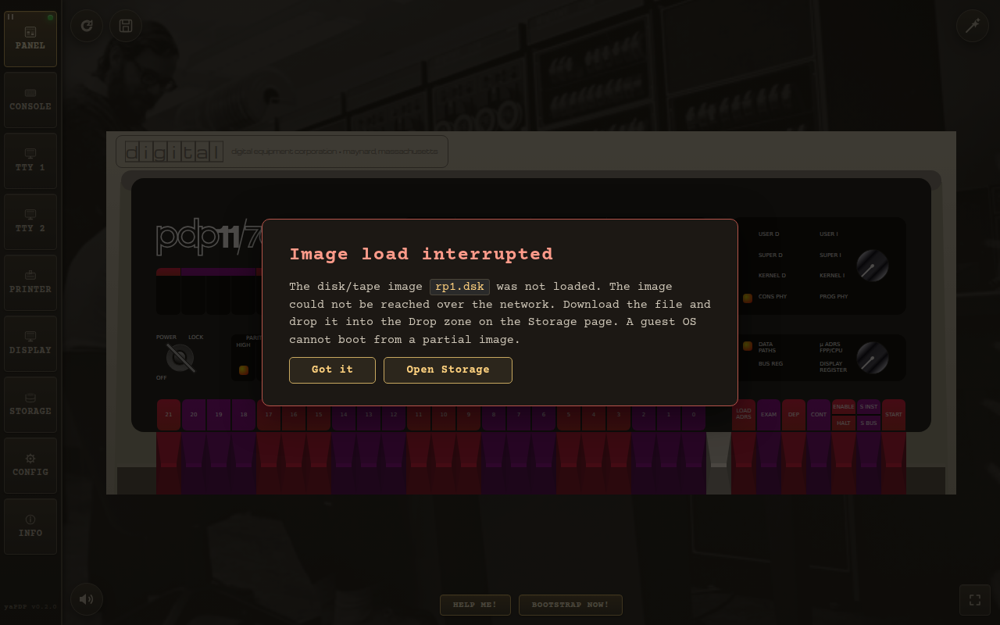
An incomplete image triggers this dialog with an Open Storage shortcut.
The Desktop App
Prefer a native app? The same emulator is packaged as an offline desktop application for Windows x64 with Tauri. Two installer variants are available:
| Variant | Ships | Notes |
|---|---|---|
| Minimal | rk0, rk1, bootcode | Small download (~3 MB). All other images are dragged & dropped at runtime. |
| Full | every image — RK/RL/RP/RA disks, TM tapes, all paper tapes | Larger download, but all 16 guest OSes boot offline with zero extra steps. |